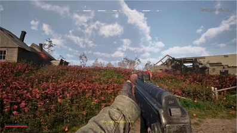
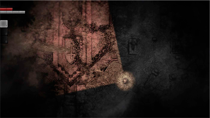

Визначення жанру
Survival horror ігри – це жанр відеоігор, який пропонує гравцям залишити зону комфорту та підкорити свої страхи. Цей жанр спеціалізується на створенні атмосфери напруження та жаху, де гравець повинен виживати в небезпечних умовах, розв'язувати загадки та боротися зі страшними монстрами. Від свого появлення в 1990-х роках survival horror ігри пройшли великий шлях еволюції та здобули неймовірну популярність серед гравців.
Зародження жанру
Survival horror жанр народився завдяки впливовій грі "Resident Evil", яка була випущена Capcom у 1996 році. Гра створила шаблон для багатьох інших ігор жанру, встановивши основні елементи, такі як обмежені ресурси (амуніція, здоров'я), постійна загроза від ворогів, та розгорнута сюжетна лінія, розкриття якої відбувається через геймплей.
Еволюція геймдизайну
З роками, survival horror ігри почали еволюціонувати, а розробники розширювати світ та геймплей жанру. Спочатку ігри були більше орієнтовані на бойовий елемент та обмеження ресурсів, але з часом деякі проекти, як "Amnesia: The Dark Descent" та "Outlast", вирішили піти на іншу стежку, де гравці мають обмежені засоби оборони та повинні приховуватися від ворогів. Ця альтернатива додала новий рівень напруження та дозволила зосередитися на створенні атмосфери жаху.
Графіка та технології
З розвитком технологій графіка survival horror ігор стала неймовірно реалістичною. Це дозволяє створити більш вражаючу та жахливу атмосферу для гравців. Зараз багато survival horror ігор розробляються з використанням віртуальної реальності, що дозволяє гравцям ще більше поглибитися в атмосферу страху та тривоги.
Популярні серії та ігри
Серед найпопулярніших серій survival horror ігор можна відзначити "Resident Evil", "Silent Hill", "Amnesia", "Dead Space" та "Outlast". Ці серії завоювали велику кількість фанатів та виробили власні унікальні стилі геймплея та атмосферу.
Кілька скріншотів
 Висновки
Отже, незалежно від того, чи ви новачок у світі survival horror ігор або ветеран цього жанру, завжди є щось нове та захоплююче для вас у цій унікальній категорії відеоігор. Грати в survival horror ігри - це завжди захоплююча подорож в найглибші кутки людського страху і виживання.